犬甲狀腺功能低下：診斷難題、少見病因與爭議關聯
主講：Daniel K. Langlois, DVM, DACVIM｜密西根州立大學（MSU）獸醫學院內科教授
2026 年 10 月 8 日｜VET-KU × Texas A&M 內科研討會｜場次 17
🎧 課堂錄音與逐字稿（Plaud）↗
資料來源標記：
投影片（頁碼＝講義投影片編號 1–57）
🎤 課堂逐字稿
📸 現場 課堂現場投影片（講義 PDF 沒有）
✍️ 筆記 上課時記下的重點與提問
💡 補充 整理者補充（機轉、判讀、交叉參照）
【更正】 逐字稿轉文字錯誤，以講義為準（完整列表見最後一節）
⭐ 必記原則
- 大多數甲低很好診斷：症狀吻合＋支持性檢驗異常＋激素低。難的是不典型的病例
- 甲狀腺炎與特發性萎縮是同一條光譜：抗體陽性 → TSH 升高 → 激素低、抗體轉陰
- TT4 用來排除（敏感但特異度約 75%）；只驗 TT4 的低值，PPV 不到 50%，像擲硬幣
- TSH 增加的是特異度，不是敏感度；約 25% 甲低犬 TSH 正常。低激素＋高 TSH 最有把握
- 多數藥物會降低 T4，但不影響 TSH；磺胺類例外，會讓 TSH 升高
- T4AA／T3AA 多半造成 T4、T3 假性升高；高度懷疑甲低、TSH 高、T4 卻正常或偏高，就是線索
- 只有平衡透析法（ED）的 fT4 不受自體抗體影響；非透析的 fT4 一樣會被干擾
- 視覺獵犬的 TT4、fT4 生理性偏低；激素低、TSH 正常是最常見的會診難題
- 單純的巨食道症或喉麻痺、攻擊性：MSU 已不再例行驗甲狀腺
- 嚴重高血脂（膽固醇平均約 1500 mg/dL）的甲低犬可能有動脈粥狀硬化，甲低是犬動脈粥狀硬化的第一名病因
- 狗的甲亢除了甲狀腺癌，也要問飲食（生肉、新奇罐頭）並仔細觸診頸部
- 停用 levothyroxine 後要等 4–8 週再複驗；非甲狀腺疾病可以讓 TT4 降到 1 nmol/L
場次資訊與大綱
▾🎤 講者與大綱
- 講者 Daniel K. Langlois，DVM、DACVIM，MSU 獸醫學院內科教授。部分資料由 MSU 獸醫診斷實驗室（MSU‑VDL）的 Dr. Kent Refsal 與 Dr. Jean Brudvig 提供。
- 🎤 這一小時聚焦甲狀腺功能低下，下一小時由 Dr. Bugbee 講甲狀腺功能亢進。
- 🎤 講者喜歡水和海灘，但住在密西根，一年只有兩三個月能享受。另一個嗜好是排球，現在也當女兒排球隊的教練。
- 🎤 大部分病例來自 MSU 的內分泌實驗室，所以病史常常不完整。
| # | 甲狀腺疾病的挑戰 | 內容 |
|---|---|---|
| 1 | 少見病因 | 先天性甲低、後天中樞性甲低 |
| 2 | 診斷難題 | 看懂完整甲狀腺套組、藥物與非甲狀腺疾病、模稜兩可或意外的結果 |
| 3 | 證據薄弱或有爭議的臨床關聯 | 食道或喉部疾病、行為改變與攻擊性、動脈粥狀硬化與神經疾病 |
1. 甲狀腺生理
▾🎤 激素合成與作用
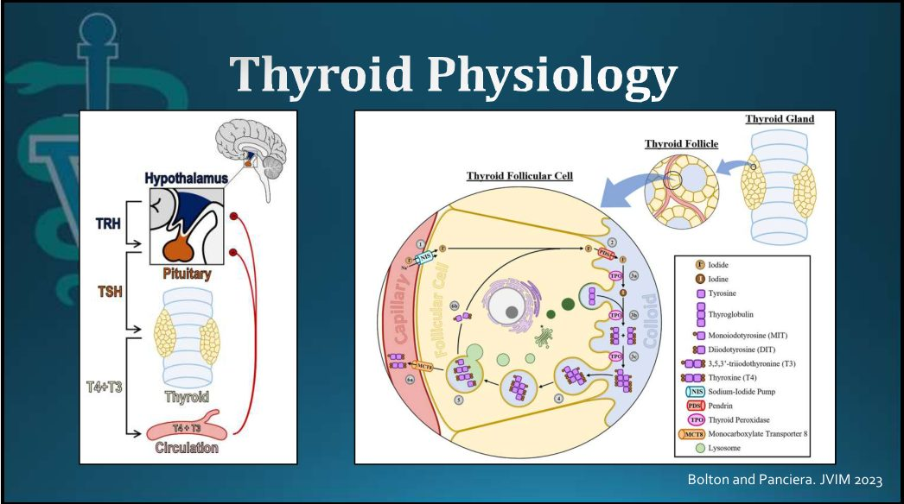
- 🎤 甲狀腺幾乎是體內唯一利用碘的器官：攝取的碘不是被排出，就是被甲狀腺使用。
- 🎤 合成步驟： 鈉碘共同運輸體（NIS）把碘從血液帶進甲狀腺細胞 → 送到頂端膜外 → 甲狀腺過氧化酶（TPO）氧化碘 → 有機化，接到甲狀腺球蛋白（Tg）上，形成 MIT、DIT → 偶聯成 T3、T4 → 再被吞回細胞、分泌進血液。
- 血中 99% 的 T4、T3 和蛋白質結合，只有游離的 fT4、fT3 能進入細胞；而且只有 T3 能進入細胞核發揮作用。
- 🎤 很多組織都有脫碘酶，可以把 T4 轉成 T3。這可能就是為什麼 T4 比 T3 更能代表整體甲狀腺狀態。
- 甲狀腺激素是生長、成熟、代謝所必需。正常濃度時促進合成（anabolic），過量時促進分解（catabolic）。
補充：這張圖是後面所有判讀的基礎。原發性（甲狀腺壞掉）時 T4 低、TSH 高；中樞性（垂體或下視丘）時 T4 低，但 TSH 不會升高。後面提到的磺胺類抑制的正是 TPO，先天性激素合成障礙則是 TPO 或 NIS 的基因突變。
2. 甲低基礎與病因
▾🎤 基本概念
- 犬常見的內分泌疾病，有人認為是第一名。文獻盛行率 0.07–0.2%；每位獸醫每年約 2–5 個新病例，同時追蹤的病例可能超過 10 隻。
- 🎤 在所有內分泌疾病中，甲低在多數情況下可能是最容易診斷、也最容易處理的：
- 甲低：臨床症狀吻合、有支持性的檢驗異常、甲狀腺激素低
- 甲狀腺功能正常：臨床健康、沒有支持性異常、激素正常
- 治療：便宜、有效、容易監測
- 🎤 「今天我們要專注在沒那麼直接的病例。」
🎤 中樞性與原發性；後天原發性甲低
- 中樞性：問題在下視丘或垂體，最後造成 TSH 分泌減少。原發性：問題在甲狀腺本身。
- 犬的甲低 超過 95% 是原發性，而且絕大多數是後天的，不是先天。
- 🎤 好發品種很多，例如黃金獵犬、大丹犬、米格魯。中年疾病：平均 6–8 歲（0.5–15 歲），沒有明確的性別或結紮傾向。
- 傳統上分成兩種：淋巴球性甲狀腺炎（自體免疫）和特發性甲狀腺退化／萎縮。🎤 但實際上它們很可能是同一條疾病光譜（見下一節）。
3. 淋巴球性甲狀腺炎的光譜
▾🎤 從亞臨床到末期
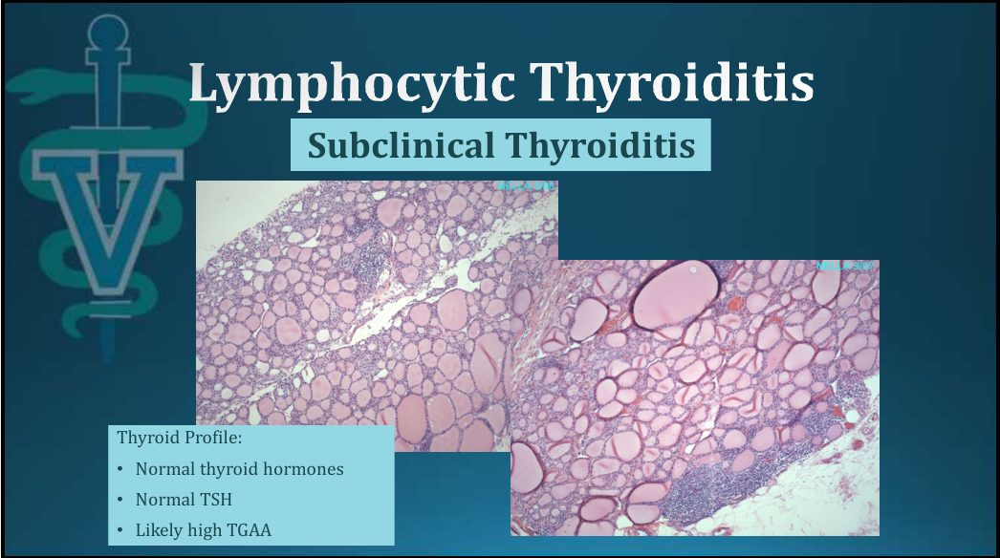
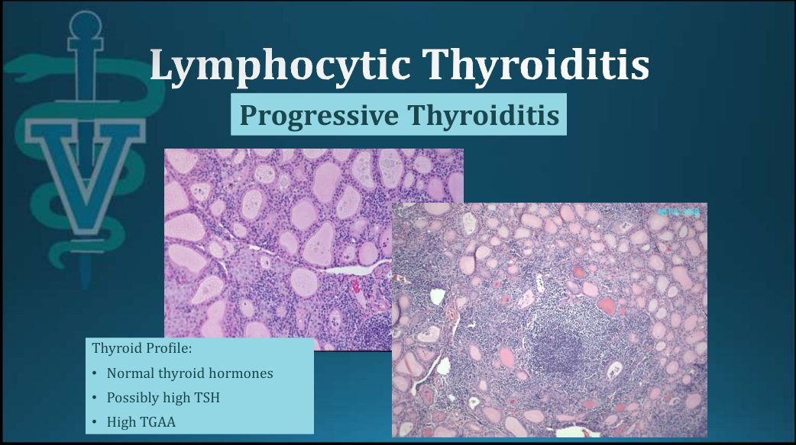
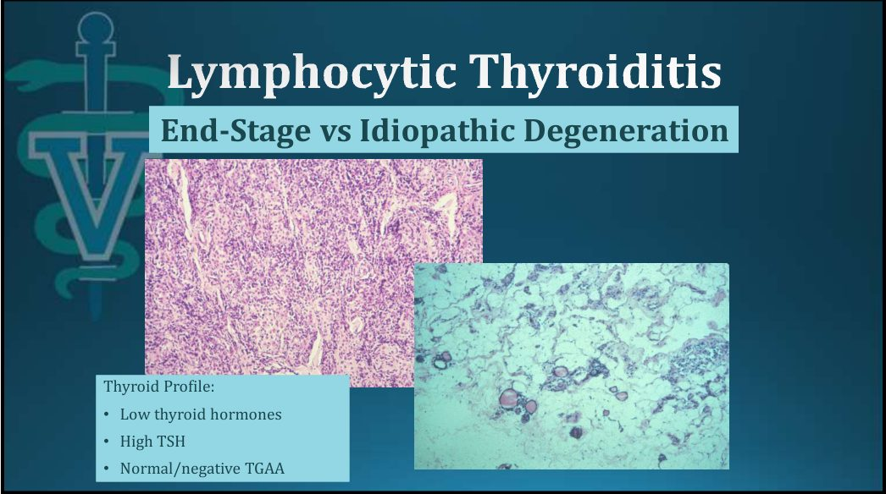
| 分期 | 組織學（🎤 講者描述） | 甲狀腺激素 | TSH | TgAA |
|---|---|---|---|---|
| 亞臨床 | 濾泡和膠質大致正常，開始有藍色小點（主要是淋巴球，也有漿細胞）浸潤；只有極少量組織流失 | 正常 | 正常 | 可能偏高 |
| 進行期（幾個月後） | 發炎浸潤更多、受損組織更多，但仍有不少功能組織；身體要更努力才能維持正常激素 | 正常 | 可能偏高 | 高 |
| 末期（一年後） | 幾乎只剩纖維脂肪組織 | 低 | 高 | 正常／陰性 |
- 🎤 末期抗體會轉陰，是因為已經沒有甲狀腺組織，沒有持續產生抗體的驅動力。
- 🎤 所以「淋巴球性甲狀腺炎」和「特發性濾泡萎縮」不一定是兩種病，很多時候只是在光譜上的不同時間點抓到牠們。
4. 臨床表現與典型病例 Bo
▾🎤 臨床表現
代謝
- 嗜睡、沒精神
- 肥胖或體重增加
- 運動不耐
- 怕冷
皮膚
- 脫毛
- 皮脂漏、毛質差
- 色素沉著、粉刺
其他
- 母犬生殖異常
- 心搏過緩、收縮力下降
- 各種神經病變
- 黏液水腫昏迷
- 🎤 「狗太胖、怎麼都減不下來」是很常見的主訴。
- 🎤 大部分甲低犬其實是先看皮膚科，而不是內科。
🎤 病例：Bo，5 歲已去勢公犬（黃金獵犬）
主訴：嗜睡、脫毛、色素沉著。🎤 鼻樑有很不幸的脫毛型態，也有點胖。
| 一般檢驗 | 結果 | 參考值 |
|---|---|---|
| HCT | 40 ↓ | 41–55% |
| ALP | 107 ↑ | 10–92 U/L |
| ALT | 51 | 21–68 U/L |
| 膽固醇 | 488 ↑ | 126–325 mg/dL |
| 甲狀腺 | 結果 | 參考值 |
|---|---|---|
| TT4 | 5 ↓ | 15–67 nmol/L |
| TT3 | 0.0 | 1.0–2.5 nmol/L |
| fT4 | 2 ↓ | 8–26 pmol/L |
| T4AA | 19 | < 20% |
| T3AA | 13 ↑ | < 10% |
| cTSH | 4.84 ↑ | < 0.58 ng/mL |
| TgAA | 116 ↑ | < 35% |
判讀：🎤 輕度貧血、ALP 輕度上升、高膽固醇都是經典的支持性異常；T4、T3、fT4 都很低，抗體高，TSH 高。淋巴球性甲狀腺炎造成的原發性甲低，非常經典。
💡 補充 T3AA 陽性代表 TT3 數值不可信，但 T3 本來就不是診斷甲低的好指標。
💡 補充 T3AA 陽性代表 TT3 數值不可信，但 T3 本來就不是診斷甲低的好指標。
5. 治療與監測
▾🎤 Levothyroxine
- 合成 T4 製劑，劑量約 0.02 mg/kg/天；每天給藥方式要一致（固定空腹或固定隨餐）；犬的半衰期短，可以 SID 或 BID；不同產品的反應可能不同。
- 🎤 在美國非常便宜，很多狗一年的藥大約 30 美元。
- 避免其他產品：
- T3 製劑半衰期短，而且🎤 會失去甲狀腺酵素的調控，需要一天多次給藥，中毒風險較高
- T3/T4 複方的比例可能不對
- 監測：代謝異常（數天到數週）比皮膚異常（數週到數月）恢復得快；新劑量後 2–4 週、之後每年 2 次，檢測 T4／fT4，最好加 TSH。
🎤 採血時機
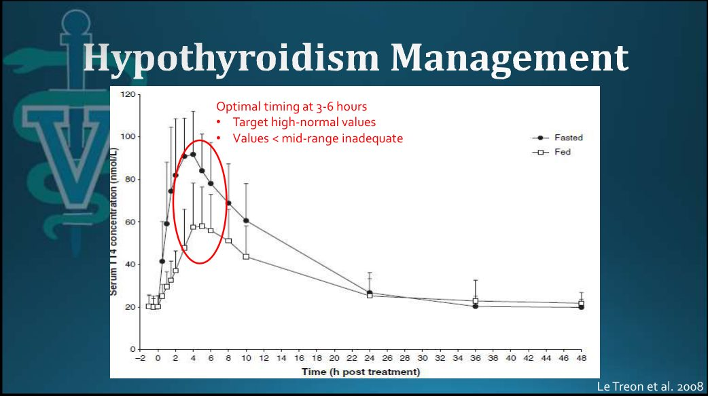
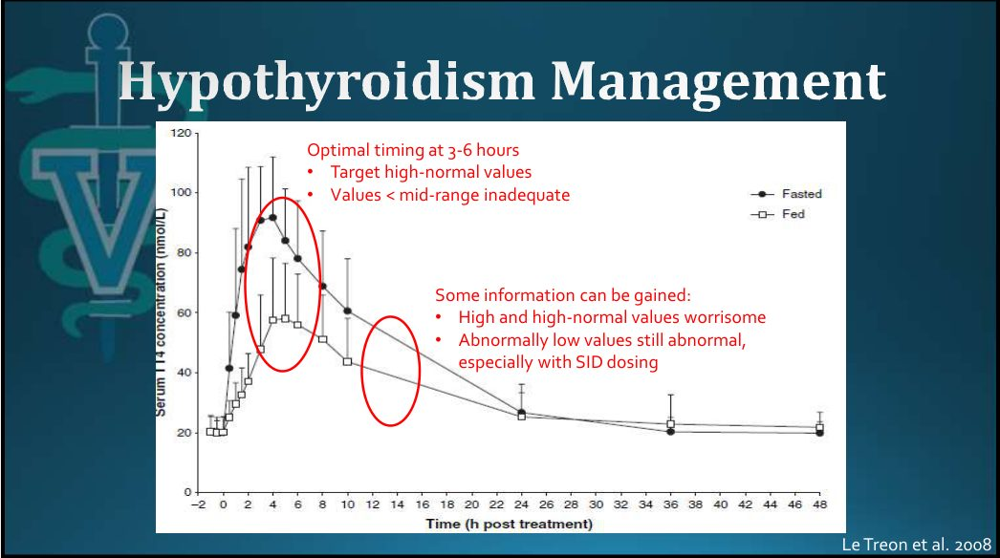
- 最佳採血時間：給藥後 3–6 小時；目標是參考範圍的中高段；低於中段代表不足。
- 不在峰值採血也有資訊：谷底仍偏高或中高 → 擔心過量；數值異常低 → 仍然不足，SID 給藥時尤其如此。
- 🎤 在曲線上幾乎任何一點都能得到有用資訊；但若在 3–6 小時監測，希望看到中高段的數值，每天給一次的狗尤其如此。
補充：圖中空腹給藥的峰值明顯比隨餐高，這就是為什麼給藥方式要固定。如果狗有 T4AA，治療後的 TT4 一樣會被干擾，這時要改用 fT4 (ED)＋TSH 監測（見第 10 節）。
6. 先天性甲低
▾🎤 中樞性 vs 原發性
中樞性（缺乏 TSH）
- 單純缺 TSH，或垂體性侏儒症的一部分
- 遺傳機制不清楚
- 🎤 甲狀腺本身沒病，只是沒有 TSH → 甲狀腺萎縮、變小
- 品種：雪納瑞（迷你與巨型）、葡萄牙水犬、蘇格蘭獵鹿犬（？）
- 🎤 MSU 那一區的經典品種是巨型雪納瑞
原發性
- 激素合成障礙（dyshormonogenesis）：🎤 最常見是 TPO 基因突變，也有 NIS 缺陷
- 甲狀腺未發育或發育不全（？）
- 🎤 有甲狀腺細胞，但做不出有功能的激素 → TSH 非常高 → 甲狀腺腫（goiter）
- 品種：玩具狐㹴與 Tenterfield 㹴、西班牙水犬、西施犬與蝴蝶犬
🎤 先天性甲低並不常見，MSU 一年大約只看到一兩例。10/9 另有一堂先天性甲低的課。
🎤 甲狀腺腫：西施犬同窩病例
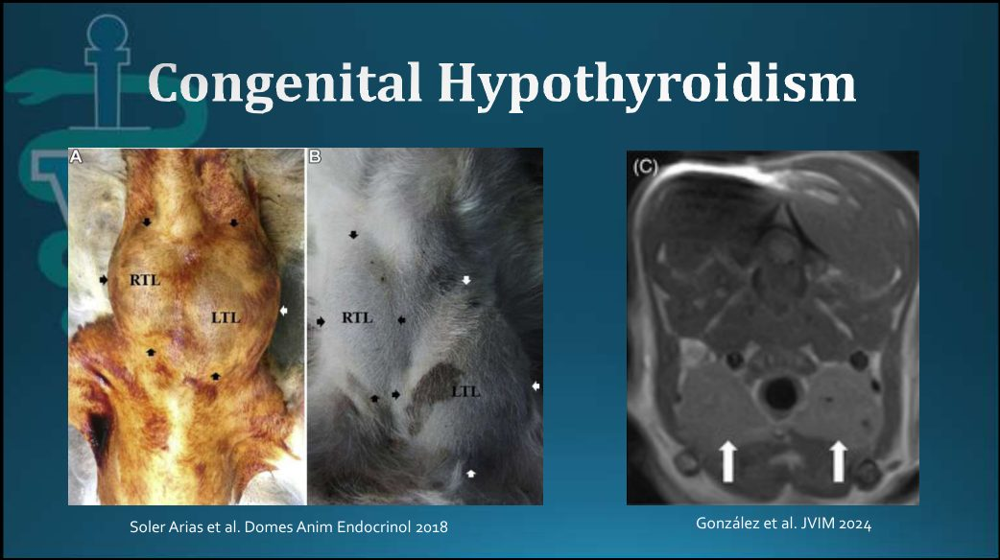
- 🎤 一窩西施犬中有幾隻先天性原發性甲低，甲狀腺腫大到吞嚥困難才來就診，大約一年半內陸續安樂死。
- 🎤 甲狀腺腫是原發性先天甲低的特徵，在狗身上非常少見。
- 🎤 第 20 張是同一篇報告的另一隻狗：幾個月大，仍有很明顯的幼犬毛、體型小、比例不對稱的侏儒。
補充：判讀腫大的甲狀腺時，年輕犬兩側對稱腫大要先想先天性甲狀腺腫；成犬或老犬、多為單側腫塊要想甲狀腺癌。預期檢驗：T4、fT4 低、TSH 高、TgAA 陰性。補充 levothyroxine 後 TSH 被抑制，甲狀腺腫通常會縮小。
🎤 臨床特徵與診斷
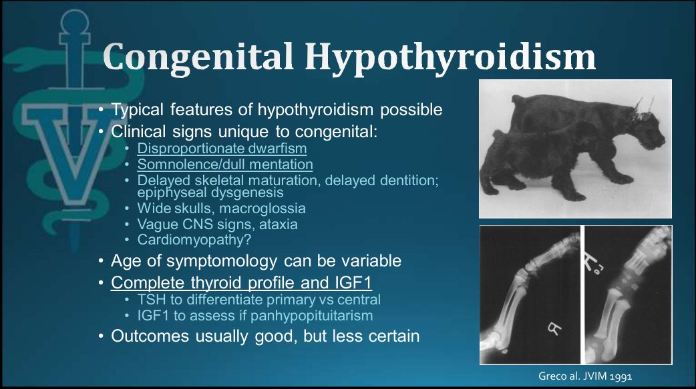
- 可以有一般甲低的典型表現，也有先天性特有的：
- 比例不對稱的侏儒症：🎤 長骨比軀幹骨受影響更多，所以腿很短，但身體長度相對正常
- 嗜睡、精神遲鈍
- 骨骼成熟延遲、換牙延遲、骨骺發育不良；🎤 生長板閉合延遲，有很多骨科問題
- 頭骨寬、巨舌；模糊的中樞神經症狀、運動失調；心肌病（？）
- 🎤 有些狗不是 8 週齡就發病，而是 3、4、5、6 個月大才被診斷。
- 完整甲狀腺套組＋IGF‑1：
- TSH 用來區分原發性（TSH 很高）和中樞性（TSH 低）
- IGF‑1 用來判斷是垂體性侏儒（全垂體功能低下）還是單純缺 TSH
- 預後通常不錯，但不如後天型確定；🎤 部分取決於多早發現。
🎤 病例：Maci，4 月齡母巨型雪納瑞
主訴：體型矮小（吻部與長骨短）、輕微嗜睡。🎤 「確診時還沒那麼『巨型』。」
| 項目 | 結果 | 參考值 |
|---|---|---|
| TT4 | 2 ↓ | 11–60 nmol/L |
| TT3 | 0.3 ↓ | 0.8–2.1 nmol/L |
| fT4 (ED) | 0 ↓ | 6–42 pmol/L |
| cTSH | 0.13（正常低值） | < 0.58 ng/mL |
| TgAA | 4 | < 35% |
| IGF‑1 | 511（正常） | 92–702 ng/mL |
判讀：🎤 激素全部很低，TSH 在正常範圍低端 → 先天性中樞性甲低。IGF‑1 正常，所以不是垂體性侏儒，是單純的先天性中樞性甲低。
7. 各項檢測的價值與 TSH 的角色
▾🎤✍️ 筆記 甲狀腺疾病的生物標記
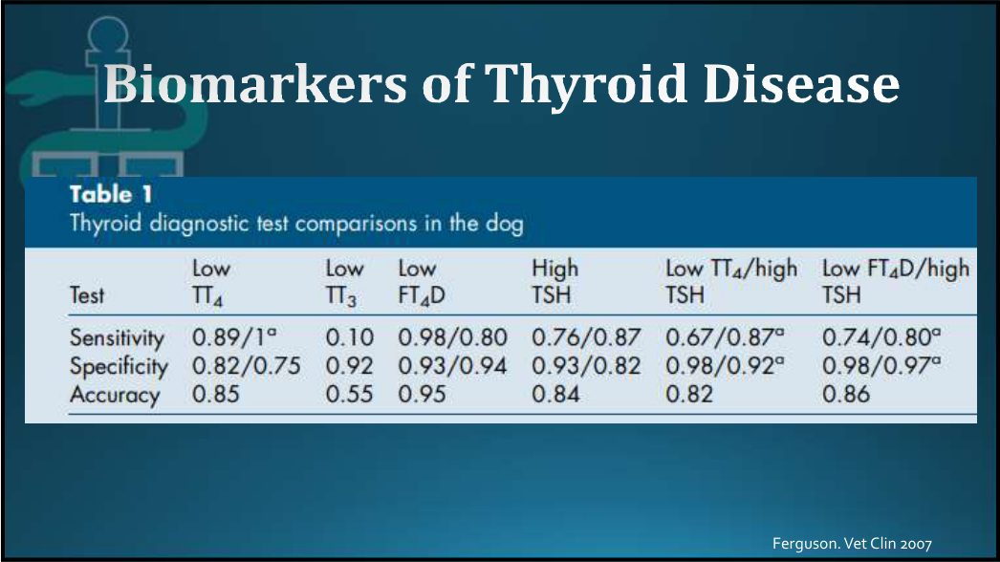
| 檢測 | 敏感度 | 特異度 | 準確度 | 重點 |
|---|---|---|---|---|
| 低 TT4 | 0.89 / 1.0 | 0.82 / 0.75 | 0.85 | 敏感度高，適合排除 |
| 低 TT3 | 0.10 | 0.92 | 0.55 | 幾乎沒有診斷價值 |
| 低 fT4 (ED) | 0.98 / 0.80 | 0.93 / 0.94 | 0.95 | 單一最準確 |
| 高 TSH | 0.76 / 0.87 | 0.93 / 0.82 | 0.84 | 約 1/4 甲低犬 TSH 正常 |
| 低 TT4＋高 TSH | 0.67 / 0.87 | 0.98 / 0.92 | 0.82 | 適合確診 |
| 低 fT4D＋高 TSH | 0.74 / 0.80 | 0.98 / 0.97 | 0.86 | 適合確診 |
- 🎤 低 TT4 是很敏感的指標，但特異度大概只有 75%。
- 🎤 fT4 的準確度取決於怎麼測：是 Immulite 這類直接類似物法，還是平衡透析？單一指標裡，fT4 by ED 可能最準，但也不完美。
- 🎤✍️ 筆記 把 TSH 加進診斷，增加的是特異度，不是敏感度。約 25% 臨床甲低犬在確診時 TSH 是正常的，原因不明。
- 🎤 最有把握的診斷方式：甲狀腺激素低＋TSH 高。
補充：TSH 能提高特異度，主要是因為非甲狀腺疾病會壓低 T4，但 TSH 通常不會升高，所以「低 T4＋高 TSH」能篩掉生病但甲狀腺正常的狗。兩個例外：磺胺類會讓 TSH 升高（Archie），中樞性甲低的 TSH 不會升高（Maci）。
記法：TT4 排除、TSH 搭配 T4 確診、fT4 (ED) 是單一檢測中最準的。
記法：TT4 排除、TSH 搭配 T4 確診、fT4 (ED) 是單一檢測中最準的。
8. 非甲狀腺疾病與預測值
▾🎤 非甲狀腺疾病（NTI，euthyroid sick syndrome）
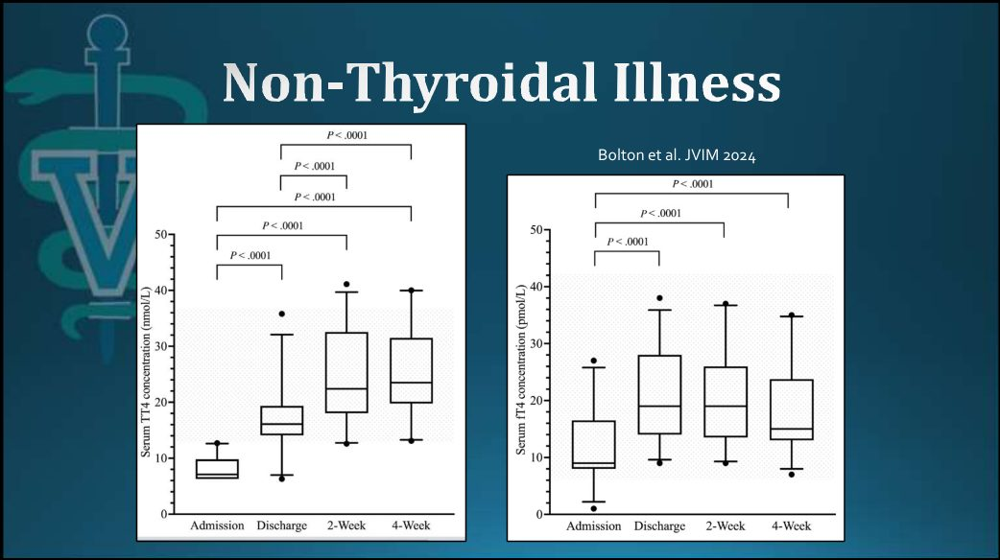
- 🎤 Bolton（現在在 Purdue）的研究：住院犬入院時不只 TT4 低，fT4 也低；病好之後，TT4 可能要幾週才會回升。
🎤 總 T4 的臨床價值：預測值
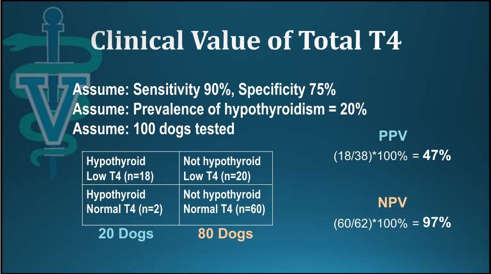
| 甲低（20 隻） | 非甲低（80 隻） | |
|---|---|---|
| T4 低 | 18 | 20 |
| T4 正常 | 2 | 60 |
- PPV = 18/38 = 47%；NPV = 60/62 = 97%。
- 🎤 敏感度和特異度只是故事的一部分，臨床上更重要的是 PPV 和 NPV，而它們會隨族群盛行率改變：驗高盛行率族群，PPV 上升；驗低盛行率族群，PPV 下降。
- 🎤 美國的大問題：幾乎每一套老年健檢都包含 T4。問題不在廠商，而在判讀。實際盛行率可能遠低於 20%，單一個低 T4 幾乎就是擲硬幣。
- 🎤 這就是為什麼甲低是美國最常被誤診的內分泌疾病之一。
9. 藥物：Archie
▾🎤✍️ 筆記 病例：Archie，1 歲已去勢公法鬥
病史：多重抗藥性膿皮症，正在使用 Apoquel 和 TMS（trimethoprim‑sulfa）；臨床穩定，院內生化發現 TT4 低，才送 MSU。
| 項目 | 結果 | 參考值 |
|---|---|---|
| TT4 | 3 ↓ | 9–52 nmol/L |
| TT3 | 0.3 ↓ | 0.5–1.4 nmol/L |
| fT4 | < 4 ↓ | 5–43 pmol/L |
| T4AA／T3AA | 10 / 3 | < 20% / < 10% |
| cTSH | 1.60 ↑ | < 0.58 ng/mL |
| TgAA | 1 | < 35% |
- 🎤 講者先問：「TT4、TT3、fT4 都低，TSH 高，所以是甲低，開始治療？」接著自己回答：「不是甲低。」
- 🎤 主要元兇通常是類固醇和非類固醇抗炎藥，phenobarbital 也會。多數藥物會降低甲狀腺激素，但不影響 TSH。
- 🎤 磺胺類抗生素是特例，會影響 TSH。Archie 是長期使用磺胺的狗。也有病例報告提到長期使用磺胺的狗（逐字稿這段轉寫不清楚，無法確定是否發展出臨床甲低）。
- 🎤 多數情況下，藥物會降低 T4、T3、fT4，但通常不會造成臨床甲低。驗甲低時一定要知道狗在吃什麼藥。
補充：支持藥物性的線索有：正在使用磺胺、只有 1 歲（後天甲低平均 6–8 歲）、TgAA 陰性、沒有臨床症狀。陷阱是：反覆膿皮症本身也可能是甲低的表現。磺胺抑制 TPO，影響是可逆的。處理方式：不要直接開 levothyroxine；能換抗生素（依培養與藥敏）就停掉磺胺，數週後再驗。Apoquel 目前沒有明顯影響甲狀腺檢驗的證據。
藥物對犬甲狀腺檢驗的影響（Bolton & Panciera, JVIM 2022）
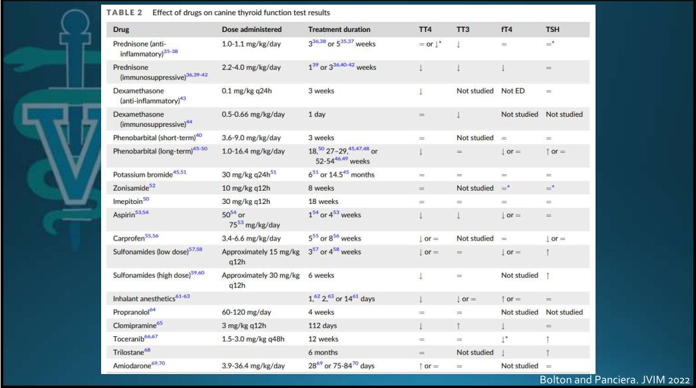
| 依機轉分類 | 藥物 | 型態 |
|---|---|---|
| 真的抑制甲狀腺 → TSH 升高（最像真的甲低） | 磺胺類（低劑量約 15 mg/kg BID 即可能、高劑量約 30 mg/kg BID）、Toceranib、Trilostane | T4／fT4 ↓、TSH ↑ |
| 只是壓低數字 → TSH 通常正常 | 類固醇（免疫抑制劑量連 fT4 都下降）、長期 Phenobarbital（TSH 可能輕微上升）、Aspirin、Carprofen、Clomipramine、吸入麻醉 | TT4 ↓（± fT4 ↓） |
| 幾乎沒有影響 | KBr、Zonisamide、Imepitoin、Propranolol | ＝ |
| 可能升高 | Amiodarone | TT4 ↑ 或 ＝ |
臨床習慣：看到 T4 低，先問三件事：有沒有生病（NTI）、有沒有吃藥、是什麼品種，再決定要不要相信這個數字。
10. 自體抗體與平衡透析
▾🎤 病例：Bitsy，3 歲母拉不拉多
主訴：一年胖了 20 磅，轉診獸醫高度懷疑甲低，但院內 TT4 竟然偏高。
| 項目 | 結果 | 參考值 |
|---|---|---|
| TT4（CLIA） | 77 ↑ | 9–52 nmol/L |
| TT3（CLIA） | 2.3 ↑ | 0.5–1.4 nmol/L |
| fT4 透析法（RIA） | 2 ↓ | 6–42 pmol/L |
| T4AA | 67 ↑ | 0–20% |
| T3AA | 76 ↑ | 0–10% |
| TSH | 3.96 ↑ | 0–0.58 ng/mL |
| TgAA | 170 ↑ | 0–35% |
- 🎤 「還有什麼跳出來？」TSH 非常高。T4 高、TSH 也高，對狗來說很不尋常：TSH 很高時，通常代表有什麼在驅使身體製造更多甲狀腺激素。
- 🎤 甲狀腺自體抗體非常高，代表有活動性淋巴球性甲狀腺炎；同樣重要的是 T4AA、T3AA 也很高，它們絕對會干擾市面上的 T4、T3 檢測。如果只驗 TT4，就會得到很意外的結果。
- 🎤 不受影響的是 fT4 by ED。
🎤 自體抗體與甲狀腺炎
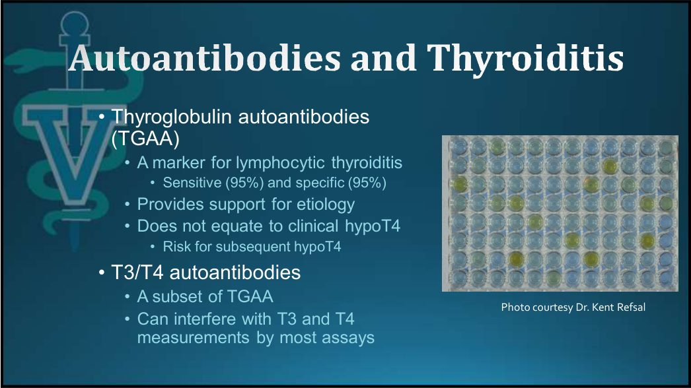
- TgAA：淋巴球性甲狀腺炎的指標，敏感度與特異度都約 95%。🎤 它告訴我們病因（有沒有甲狀腺炎），不是功能。TgAA 陽性不等於臨床甲低，但日後發生甲低的風險較高。
- 🎤 「我不知道其他地方有沒有在驗自體抗體，也不一定要驗。重點是要知道它們的存在。」
- T3/T4 自體抗體是 TgAA 的子集合，🎤 絕對會干擾很多直接類似物法；多數情況造成 T4、T3 假性升高。有些 RIA 方法的影響方向相反，但現在應該很少實驗室用 RIA 測 TT4、TT3。
💡 補充✍️ 筆記 為什麼抗體會干擾？
- 大多數 T4 檢測是競爭型免疫分析，像搶椅子：試劑抗體是固定數量的「椅子」，實驗室加入一定量的標記 T4，和病患的 T4 一起搶。機器測的是標記 T4 坐到多少椅子，再反推病患 T4：標記 T4 坐得少 → 判讀 T4 高。
- 病患的 T4AA 會在半路攔截標記 T4 → 坐上椅子的標記 T4 變少 → 機器誤以為病患 T4 很多 → 假性升高。干擾方向取決於方法怎麼分離結合和游離部分，所以有 T4AA 時，最好直接把 TT4 視為不可信。
- 非透析 fT4（直接類似物法）用的是標記 T4 類似物，它不會和正常結合蛋白結合，但 T4AA 還是會抓它，所以一樣會失真。
- 為什麼甲狀腺炎會有 T4AA／T3AA：T4、T3 本來就是在 Tg 分子上合成的，有些抗 Tg 的抗體剛好認得 Tg 上含激素的那一段，也就能抓住游離 T4／T3。
- 甲狀腺炎不等於 T4／T3 一定被干擾：TgAA 本身不干擾，只有一部分 TgAA 陽性的狗有 T4AA／T3AA，而且 T3AA 比 T4AA 常見。
🎤✍️ 筆記 平衡透析法測游離 T4（fT4 by ED）
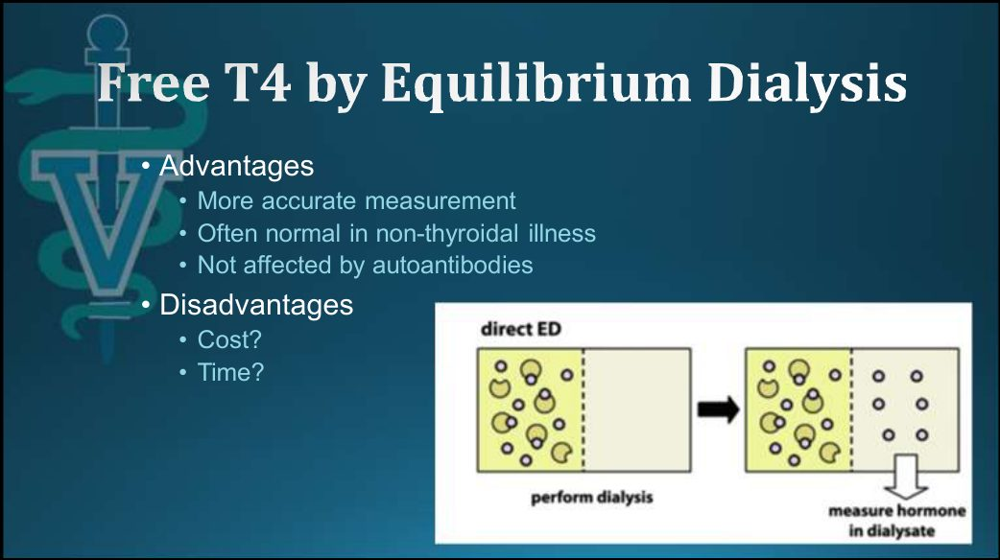
- ED＝Equilibrium Dialysis（平衡透析法），是 fT4 的檢測方法，只修飾 fT4。講義和報告上的 fT4 (ed)、free T4 (eq dial)、Free T4 by dialysis、FT4D 都是同一件事。
- 🎤 MSU 的做法：透析隔夜，洗掉抗體和很多干擾物質；游離 T4 穿過膜後，再用 RIA 測量。可能是更能代表狗真實 fT4 的指標。
- 優點：更準確；在 NTI 時常維持正常；不受自體抗體影響（抗體是大分子 IgG，過不了膜，透析液裡完全沒有抗體）。
- 缺點：🎤 顯然是成本和時間，報告比較慢，也會讓套組變貴。
🎤✍️ 筆記 Roosevelt、Jackpot、Cash
| 病例 | 主訴 | TT4 | fT4 | T4AA／T3AA | TSH | TgAA | 重點 |
|---|---|---|---|---|---|---|---|
| Roosevelt 4 歲 M/N 比特 | 慢性嗜睡、脫毛；院內 TT4 正常 | 18（假性正常） | ED 0 ↓ | 67 / 72 ↑ | 1.63 ↑ | 164 ↑ | 抗體把 TT4、TT3 拉回參考範圍 |
| Jackpot 7 歲 M/N 混種 | 嗜睡、體重增加、精神遲鈍 | 71（假性偏高） | ED 1 ↓ | 60 / 13 | 2.11 ↑ | 120 ↑ | 主要是 T4AA 高 |
| Cash 2 歲 M/N 比特×牧羊犬 | 體重增加、高膽固醇；外檢 TT4 低、TSH 高，但 fT4 正常 | — | ED 5 ↓ | 33 / 23 ↑ | 4.10 ↑ | 95 ↑（specific TgAA 132） | 直接類似物法的 fT4 也會被干擾 |
- 🎤 Roosevelt：✍️ 筆記 淋巴球性甲狀腺炎，抗體很高。只看 T4 就會漏診。講者的經驗是：自體抗體很高的狗，激素如果被影響，通常是異常偏高，這是很大的線索；但也有像 Roosevelt 這樣，只被拉回參考範圍的。
- 🎤 Jackpot：T4AA 高、T3 沒有被拉高。TgAA 陽性的狗可能 T4AA、T3AA 都高，也可能只有其中一個，型態不一定。
- 🎤 Cash：外部實驗室的 fT4 正常，但 TSH 高、臨床高度懷疑，所以送 MSU。所有沒有透析步驟的直接類似物法，fT4 一樣可能被影響；只驗 fT4 不保證不會被干擾。
- 🎤 很多狗沒有自體抗體，這時就無所謂；但當結果和臨床對不起來時，要想到這件事。
補充：Roosevelt 在光譜上的位置：功能已經衰竭（fT4 ED 0、TSH 高），但 TgAA 仍然很高，也就是免疫攻擊還在、抗體還沒燒完，介於進行期和末期之間。治療後監測不能靠 TT4，要用 fT4 (ED)＋TSH（給藥後 4–6 小時，fT4 中高段、TSH 回到正常）。
11. 模稜兩可：Scout 與 Ellie Mae
▾🎤✍️ 筆記 病例：Scout，8 歲 M/N 捲毛犬（Cur）
主訴：體重增加、減重困難、曾經驗到 1 次 TT4 低。🎤 「Cur」應該就是美國的中型混種犬。
| 項目 | 結果 | 參考值 |
|---|---|---|
| TT4 | 24 | 9–52 nmol/L |
| TT3 | 1.1 | 0.5–1.4 nmol/L |
| fT4 | 13（偏低但正常） | 6–42 pmol/L |
| T4AA | 11 | < 20% |
| T3AA | 53 ↑ | < 10% |
| cTSH | 1.04 ↑ | < 0.58 ng/mL |
| TgAA | 162 ↑ | < 35% |
- 🎤 有自體抗體，所以至少可以確定有淋巴球性甲狀腺炎，甲狀腺正在發生病變。但是臨床上甲低了嗎？
- 🎤 「我不確定。」TSH 高，代表身體要更努力才能維持正常激素；但 TT4、fT4 都還正常。MSU 的判讀報告大概會「非常搖擺、不下定論」。
- 🎤✍️ 筆記 講者認為這隻狗正走向原發性甲低，只是不確定到了沒有。試驗性治療或等待複驗，沒有對錯。很多甲狀腺套組就是沒那麼清楚。
補充：T4AA 陰性，所以 TT4、fT4 可信；T3AA 陽性只影響 TT3。Scout 對應第 9 張的進行期（代償期），也就是「亞臨床甲低」。有前瞻性研究追蹤 TgAA 陽性、但功能正常的狗一年，約 1/5 出現甲低的檢驗變化；Scout 已經同時有 TSH 升高，又往前走了一步。
選項 A：觀察，每 3–6 個月驗 T4（或 fT4 ED）＋TSH，同時嚴格減重；嚴格控制飲食仍瘦不下來，也算是一個佐證。
選項 B：試驗性治療，便宜安全；但要終生吃藥，開始後很難再評估自身功能，而且甲狀腺素過量時正常的狗也會變瘦，治療有效不能反推確實是甲低。
選項 A：觀察，每 3–6 個月驗 T4（或 fT4 ED）＋TSH，同時嚴格減重；嚴格控制飲食仍瘦不下來，也算是一個佐證。
選項 B：試驗性治療，便宜安全；但要終生吃藥，開始後很難再評估自身功能，而且甲狀腺素過量時正常的狗也會變瘦，治療有效不能反推確實是甲低。
🎤✍️ 筆記 病例：Ellie Mae，2 歲 F/S 格雷伊獵犬
主訴：肩膀和大腿輕度脫毛、輕微皮脂漏。
| 項目 | 結果 | 參考值 |
|---|---|---|
| TT4 | 7 ↓ | 11–60 nmol/L |
| TT3 | 1.1 | 0.8–2.1 nmol/L |
| fT4 | 7 ↓ | 9–39 pmol/L |
| T4AA／T3AA | 11 / 7 | < 20% / < 10% |
| cTSH | 0.22 | < 0.58 ng/mL |
| TgAA | 1 | < 35% |
- 🎤✍️ 筆記 T4、fT4 有點低，T3 正常，TSH 正常，抗體全部正常 → 可能不是甲低。
- 🎤 要注意品種特性。也許很多甲狀腺項目應該有品種專屬參考範圍：視覺獵犬的 TT4 和 fT4 比較低，在某些品種中 T3 也許是比較好的指標。這可能就是這隻狗的正常值。
補充：其他視覺獵犬（惠比特、薩路基、蘇格蘭獵鹿犬、愛爾蘭獵狼犬、蘇俄牧羊犬）也有類似現象。格雷伊大腿後側對稱稀毛常見於「禿大腿症候群」（bald thigh syndrome），和甲狀腺無關。TSH 正常不能 100% 排除（約 1/4 甲低犬 TSH 正常），但 2 歲、抗體陰性、只有輕微皮膚問題，不應該治療。
🎤 困難情境：甲狀腺激素低，但 TSH 正常
- 🎤 這可能是 MSU 最常被會診的難題：該不該治療？沒有一個適用所有病例的答案。
- 臨床與檢驗異常都吻合，而且 fT4 by ED 低 → 治療。🎤 症狀和檢驗都吻合、已排除其他會造成這些症狀的疾病、激素又低，經驗性治療絕對合理。
- 沒有臨床症狀或檢驗異常 → 等待並複驗。🎤 狗很穩定、沒什麼症狀，就建議等待複驗。
- 不確定性無法避免。🎤 這是少數真的會遇到「不知道是不是臨床甲低」的內分泌疾病之一。
- 試驗性治療在某些情況合理，前提是：已排除非甲狀腺疾病、TT4 重複驗都低、已做完整套組；風險低，可能也符合成本效益。
- 🎤 甲狀腺素便宜、好給、相對安全；最理想的情況是治療反應確認了診斷。但要小心，有些其他臨床症狀也可能對甲狀腺激素有反應。如果沒有反應，就代表症狀可能不是甲低造成的。MSU 並不常這麼做。
🎤 MSU 頂級甲狀腺套組
- 包含 TT4、TT3、fT4 (ED)、TSH、T3AA、T4AA、TgAA。MSU 醫院送到自己實驗室的每一個樣本都做全套，相當貴。
- 🎤 「我不是要你們把樣本送到 2000 英里外。」重點是要知道很多狗有淋巴球性甲狀腺炎、有些有自體抗體，就算不驗抗體也要保持警覺。
- 🎤 臨床高度懷疑甲低、TSH 高，但 T4／T3 正常或偏高：就算驗不到抗體，這也是抗體存在的很大線索。
- 🎤 講者問台下：這裡的 fT4 是用 Immulite 這類直接類似物法，還是有實驗室做透析？要看執業地點；就算沒有，只要知道有哪些因素會影響結果，還是可以有把握地執業。
12. 爭議關聯：食道／喉部功能障礙、攻擊性
▾🎤✍️ 筆記 食道與喉部功能障礙
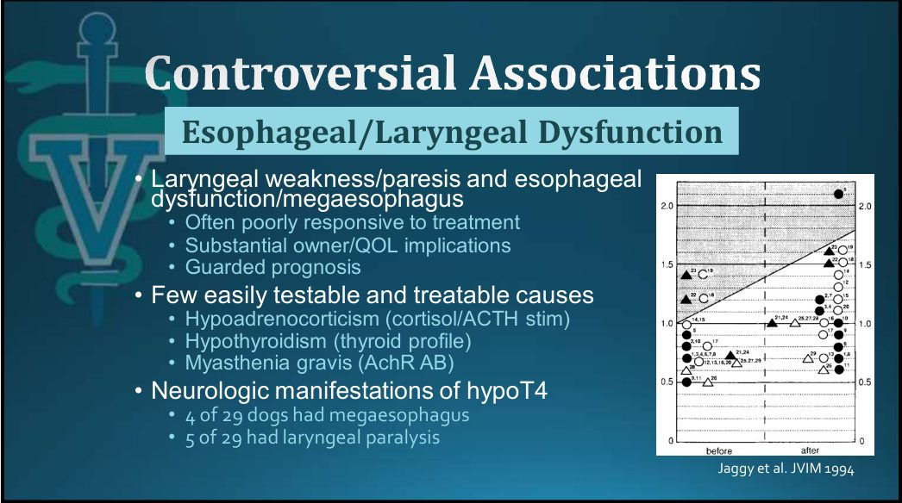
- 喉部無力或麻痺、食道功能障礙或巨食道症：常常對治療反應差，對飼主和生活品質影響很大，預後保留。
- 少數容易檢測又能治療的病因：腎上腺皮質功能低下（cortisol／ACTH 刺激）、甲低（甲狀腺套組）、重症肌無力（AChR 抗體）。
- 甲低的神經學表現（Jaggy 1994）：29 隻中 4 隻有巨食道症、5 隻有喉麻痺。
- 🎤 過去的病例報告認為甲低可能造成喉麻痺或巨食道症，大家希望是甲低，因為它好治。但後來幾個較大的世代研究（📄 41：Stanley 2010、Gaynor 1997）沒有證實甲低和單純喉麻痺或單純食道功能障礙之間有因果關係或強烈關聯。
- 🎤✍️ 筆記 「單純」是指這是牠唯一的臨床異常。巨食道症的狗如果沒有其他生化或臨床證據顯示甲低，MSU 不會驗甲狀腺；8 歲拉不拉多來看喉麻痺，沒有其他有力證據，也不會驗。
- 🎤 七八年前，每一隻食道或喉部功能障礙的狗都會驗甲狀腺；近年已經轉向不驗。
補充：為什麼不再例行檢驗：(1) 後天喉麻痺常是老年發作喉麻痺多發性神經病變（GOLPP）的一部分，而中老年大型犬本來就是甲低好發族群，容易誤以為有因果；(2) 這些狗常有吸入性肺炎，NTI 會壓低 T4，加上驗前機率低，PPV 更差；(3) 治療甲低後，喉麻痺或巨食道症通常不會改善。有支持性證據（嗜睡、增重、皮膚症狀、高膽固醇、貧血）時才驗完整套組，最好等肺炎穩定後再驗。重症肌無力與 Addison 仍值得篩檢。
🎤 攻擊性
- 甲低過去被認為和攻擊性有關，證據來自零星的個案報告和小型病例系列；部分行為專家建議驗甲狀腺；一些研究中的甲低診斷本身就有疑問。
- 🎤 大概 10–15 年前，美國很多行為專家把甲狀腺套組列入攻擊性的檢查。MSU 實驗室至今仍收到很多主訴為攻擊性的樣本。
- Toby，6 歲 M/N 柯基，嚴重護食攻擊：TT4 29、TT3 1.1、fT4 (ED) 23、T4AA 10、T3AA 6、TSH 0.20、TgAA 6，🎤 非常正常的甲狀腺套組。
- 🎤 幾個較嚴謹的研究比較攻擊犬和對照組，並追蹤變化，一般來說沒有確切關聯。MSU 也已不再建議在這種情況驗甲狀腺。
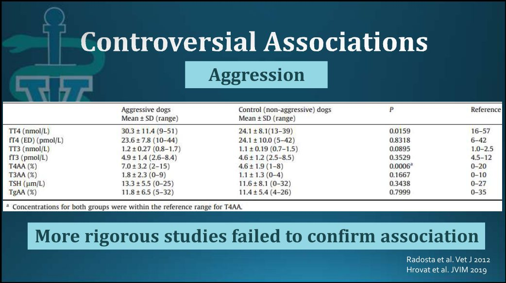
13. 動脈粥狀硬化與黏液水腫昏迷
▾🎤 病例：9 歲未去勢公混種犬（Giralico 2021）
- 近期無力、嗜睡、食慾下降。理學檢查：黏膜黏稠、蒼白、黃疸；軀幹與尾根脫毛，BCS 8/9；嚴重沉鬱與四肢輕癱。
- 檢驗：ALT > 4500 U/L、膽紅素 4.5 mg/dL、膽固醇 1272 mg/dL、三酸甘油酯 1118 mg/dL。
- 🎤 照片中的狗有所謂的「悲劇臉」，皮膚和皮下組織看起來軟軟的、水腫。
- 🎤 除了嚴重肝損傷，膽固醇 1300 對幾乎任何急性肝損傷來說都很不尋常，所以作者很擔心是甲低。甲低多數不會造成急性或嚴重的臨床疾病。
| 項目 | 結果 | 參考值 |
|---|---|---|
| TT4 | 0 | 9–45 nmol/L |
| TT3 | 0.4 ↓ | 0.8–2.1 nmol/L |
| fT4 | 9 | 6–42 pmol/L |
| T4AA／T3AA | 10 / 11 | 0–20% / 0–10% |
| TSH | 0.97 ↑ | 0–0.58 ng/mL |
| TgAA | 11 | 0–35% |
- 🎤 激素低本身說明不了太多，因為這是急性病的狗；有說服力的是 TSH 很高，所以很可能真的是甲低。（MSU 實驗室跑了這個套組，所以知道這個病例。）
- 🎤 狗沒有存活。剖檢在腦、心臟、腎臟都有動脈粥狀硬化病灶。
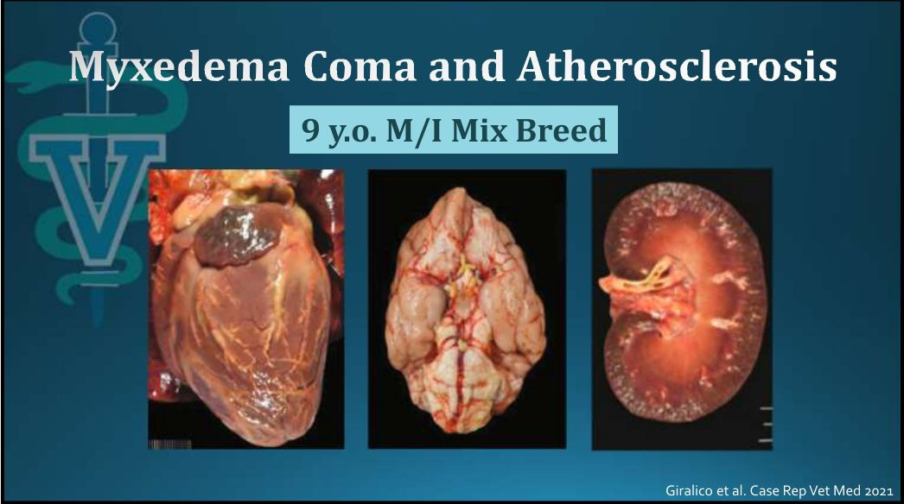
🎤 「沒那麼有爭議」的關聯：中樞神經疾病與動脈粥狀硬化
- 🎤 相較於食道／喉部、攻擊性這些沒什麼關聯的，甲低在某些狗確實會造成嚴重的動脈粥狀硬化，證據相當有說服力。
- 回溯性病理研究中，甲低是犬動脈粥狀硬化的第一名潛在疾病。
- 很多報告描述神經症狀與動脈粥狀硬化的影像或病理：急性到慢性、前庭疾病、腦神經缺損、運動失調、癲癇、各種腦血管事件。
- 膽固醇通常 > 800 mg/dL（平均約 1500）。🎤 這不是常見的甲低表現，通常是脂質代謝嚴重紊亂的狗。
- 其他器官系統也可能受影響（亞臨床？）；可能是黏液水腫昏迷的促成因素？
補充：狗本來很少發生動脈粥狀硬化，看到時要先想甲低。黏液水腫昏迷的表現是心搏過緩＋低體溫＋意識遲鈍＋換氣不足，是甲低的急症。心臟相關內容見課後 Q&A。
14. 飲食性甲亢：哈瓦那犬與 Zippity
▾🎤 病例：7 歲 M/C 哈瓦那犬（Morré 2017）
- 住在維吉尼亞州，3 週來喘、過動、有攻擊性。健康照護都有做，過去沒有健康問題，吃市售罐頭。🎤 是對飼主很重要的狗（可能是展示犬）。
- 家庭獸醫照 X 光，懷疑輕微支氣管型態，開 prednisone 治療可能的支氣管炎。
- 8 週前年度健檢就驗過甲狀腺：TT4 7.7（13–51）、fT4 < 3.9（7.7–47.6），兩者都低。🎤 狗沒有甲低症狀，所以沒處理，講者同意這個做法。
- 幾週後類固醇減量中再驗：TT4 < 0.6、fT4 14。狗持續喘、過動、攻擊。
🎤✍️ 筆記 內科專科評估
病程進展：多喝多尿、體重下降、心雜音。專科醫師結果很意外，所以送了兩次。
| 項目 | Day 0 | Day 17 | 參考值 |
|---|---|---|---|
| TT4 | 11 | 5 | 11–60 nmol/L |
| TT3 | > 4.7 ↑ | 4.3 ↑ | 0.8–2.1 nmol/L |
| fT4 (ED) | 13 | 6 | 6–42 pmol/L |
| fT3 | > 18.6 ↑ | 16.6 ↑ | 1.2–8.2 pmol/L |
| T4AA／T3AA | 8 / 4 | 6 / 5 | < 20% / < 10% |
| cTSH | 0.10 | 0.00 | < 0.58 ng/mL |
| TgAA | 3 | 3 | < 35% |
- 🎤 T4、fT4 偏低或低正常，抗體陰性，TSH 低正常，但 T3 非常高，而且重複驗都很高。
- 🎤✍️ 筆記 當時的推論：可能是分泌 T3 的功能性甲狀腺癌，於是轉診到 Virginia‑Maryland 獸醫學院做甲狀腺閃爍掃描。
🎤 三級轉診：閃爍掃描與「有趣的甲狀腺結果」
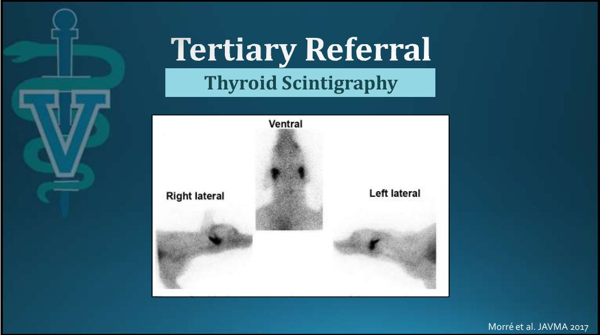
- 🎤 黑色區域只是唾液腺，頸部沒有可見的甲狀腺組織。至少在甲狀腺的位置，看起來不像真的有甲狀腺腫瘤，完全沒有攝取。
- 🎤 在 Virginia‑Maryland：第一天（Day 51）驗一次，掃描當天早上（禁食 24 小時後，Day 52）再驗一次。
| 項目 | Day 51 | Day 52（禁食 24 小時後） | 參考值 |
|---|---|---|---|
| TT4 | 6 | 1 | 11–60 nmol/L |
| TT3 | 4.1 ↑ | 0.1 | 0.8–2.1 nmol/L |
| fT4 (ED) | 5 | 2 | 6–42 pmol/L |
| fT3 | 19.7 ↑ | 0.7 | 1.2–8.2 pmol/L |
| T4AA／T3AA | 8 / 5 | 6 / 6 | < 20% / < 10% |
| cTSH | 0.13 | 0.10 | < 0.58 ng/mL |
| TgAA | 3 | 3 | < 35% |
答案：🎤 「這隻狗怎麼了？——飲食。」這是飲食性甲亢。
💡 補充 判讀邏輯：T3 半衰期只有幾小時，禁食 24 小時後停止攝入，TT3、fT3 就從極高掉到幾乎測不到（大約 4 個半衰期 → 1/16）。外源性激素抑制了 TSH，自身甲狀腺停工，所以 T4 低、掃描在甲狀腺的位置也看不到攝取。8 週前那次「T4 低」也是同一個機轉，不是甲低。教學重點：T4 低但臨床像甲亢（喘、過動、多喝多尿、體重下降），要驗 T3／fT3 和 TSH，並仔細問所有食物與零食。
💡 補充 判讀邏輯：T3 半衰期只有幾小時，禁食 24 小時後停止攝入，TT3、fT3 就從極高掉到幾乎測不到（大約 4 個半衰期 → 1/16）。外源性激素抑制了 TSH，自身甲狀腺停工，所以 T4 低、掃描在甲狀腺的位置也看不到攝取。8 週前那次「T4 低」也是同一個機轉，不是甲低。教學重點：T4 低但臨床像甲亢（喘、過動、多喝多尿、體重下降），要驗 T3／fT3 和 TSH，並仔細問所有食物與零食。
🎤 病例：Zippity，8 歲 F/S 邊境牧羊犬
- 在最近的狗展上在籠子裡發抖，焦慮緊張；理學檢查、CBC、生化都正常；事後才問出吃生肉飲食。TT4 156 nmol/L（15–67）。
- 🎤 吃的是甲狀腺激素濃度超高的市售生肉飲食；諮詢後停掉，激素就恢復正常。
| 項目 | 5 月 | 9 月（停生肉後） | 參考值 |
|---|---|---|---|
| TT4 | > 156 ↑ | 18 | 15–67 nmol/L |
| TT3 | 2.3 | 0.6 | 1.0–2.5 nmol/L |
| fT4 | 49 ↑ | 6 | 8–26 pmol/L |
| fT3 | > 29.8 ↑ | 2.4 | 4.5–12 pmol/L |
| T4AA／T3AA | 7 / 5 | 12 / 3 | < 20 / < 10 |
| cTSH | 0.05 | 0.13 | < 0.58 ng/mL |
| TgAA | 7 | 5 | < 35% |
補充：9 月的 TT3、fT4、fT3 略低，是自身甲狀腺還在從長期抑制中恢復。
🎤 「漢堡甲狀腺毒症」與犬的飲食性甲亢
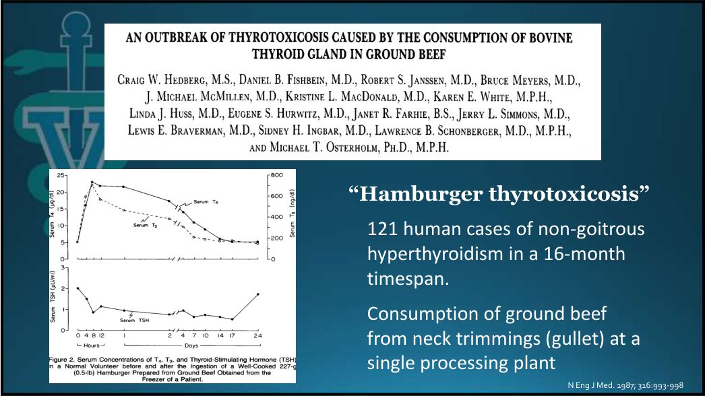
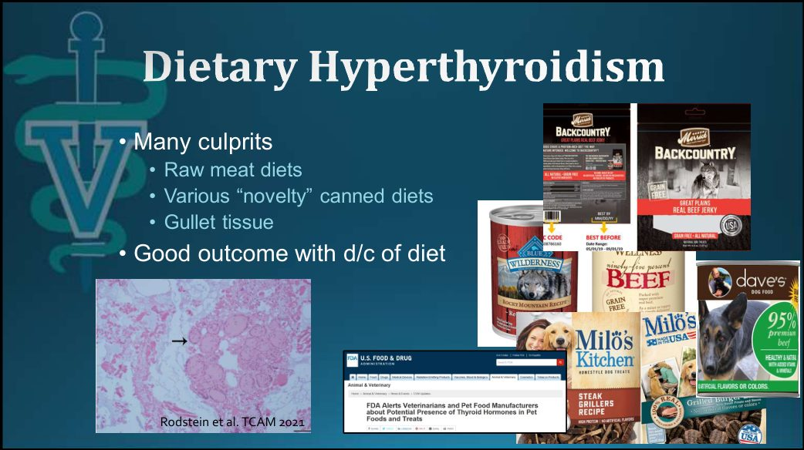
- 人醫在 1980 年代發生「漢堡甲狀腺毒症」：16 個月內 121 例非甲狀腺腫型甲亢，都吃了同一家屠宰廠用頸部修邊肉（含喉部組織 gullet）做的牛絞肉。
- 犬的元兇很多：生肉飲食、各種「新奇」罐頭、喉部組織零食；停掉該飲食後預後良好。
- 🎤 2017–2018 年左右很受關注。名單上沒有 Royal Canin、Hill's、Purina，多半是新奇食品，很多是罐頭；講義的組織切片可以看到食物裡真的有甲狀腺組織。後來美國 FDA 召回了很多產品。
- 🎤 現在沒那麼多了，但還是偶爾會看到。
15. 犬甲亢與甲狀腺腫瘤
▾🎤 犬甲亢
- 犬甲亢通常來自有功能的甲狀腺腫瘤；狗的甲狀腺腫塊 ≈ 癌；治療：甲狀腺切除、放射治療、I‑131。🎤 「這點還是對的，沒有改變。」
- 但是：多數病例頸部摸得到腫塊；症狀通常來自腫塊壓迫；大部分甲狀腺癌沒有功能。
- 這也是應該做完整甲狀腺套組的另一個理由。
- 🎤 遇到甲亢的狗：仔細問飲食史、仔細觸診頸部。尤其是給「很健康的飲食」、自煮或生食的飼主。（MSU 實驗室收很多樣本，所以看到的病例可能有偏差。）
16. 加碼病例：貓的非甲狀腺疾病
▾📸 現場🎤✍️ 筆記 13 歲 F/S 家貓短毛（DSH）
🎤 因為提早講完，講者加碼一張原本刪掉的投影片。
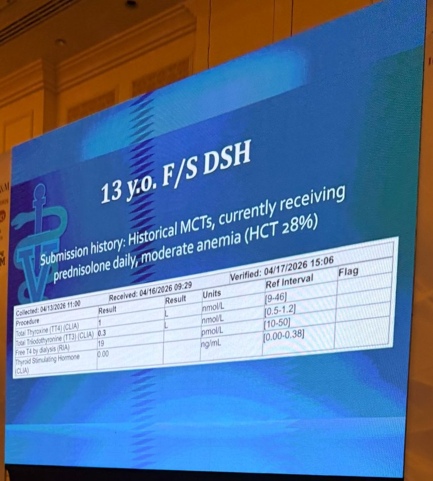
| 項目 | 結果 | 參考值 |
|---|---|---|
| TT4（CLIA） | 1 ↓ | 9–46 nmol/L |
| TT3（CLIA） | 0.3 ↓ | 0.5–1.2 nmol/L |
| fT4 透析法（RIA） | 19 | 10–50 pmol/L |
| TSH（CLIA） | 0.00 | 0.00–0.38 ng/mL |
- 🎤 會診問題：這隻貓是不是甲低？答案：可能不是。
- 🎤 前面一直在講狗的 NTI，但大家可能低估了 NTI 對貓的影響。兩個月後再送檢，已經停掉類固醇，甲狀腺套組完全正常。
- 🎤✍️ 筆記 NTI 可能是狗（這次是貓）被誤診為甲低最主要的原因。很多人誤以為 NTI 只會造成輕微變化，其實可以非常明顯，像這隻 TT4 只有 1。
補充：fT4 (ED) 正常、TSH 沒有升高 → 不是原發性甲低；這隻貓同時有 NTI 和類固醇的雙重影響。TT4 下降程度和病情嚴重度相關，TT4 越低，死亡率越高。
犬貓的陷阱方向不同：狗的 NTI 主要造成誤診為甲低；貓的自發性甲低極罕見（多為醫源性，例如放射碘、甲狀腺切除、methimazole 過量，且 TSH 會升高），所以貓 NTI 更重要的影響是掩蓋甲亢：被掩蓋的甲亢 TT4 常在正常中高段、fT4 (ED) 偏高。另外，貓用的是犬 TSH 檢測，很多正常老貓 TSH 本來就驗不到。
犬貓的陷阱方向不同：狗的 NTI 主要造成誤診為甲低；貓的自發性甲低極罕見（多為醫源性，例如放射碘、甲狀腺切除、methimazole 過量，且 TSH 會升高），所以貓 NTI 更重要的影響是掩蓋甲亢：被掩蓋的甲亢 TT4 常在正常中高段、fT4 (ED) 偏高。另外，貓用的是犬 TSH 檢測，很多正常老貓 TSH 本來就驗不到。
17. 課後 Q&A
▾Q1：病患沒有確診就一直在吃 levothyroxine，想之後重新檢驗，要停藥多久？
🎤✍️ 筆記 證據不多。通常說至少 4 週；如果已經吃很久（好幾個月甚至好幾年），通常建議至少 2 個月。所以是 4–8 週。
💡 補充 原因：外源性 T4 會抑制 TSH，甲狀腺功能正常的狗自身甲狀腺會停工萎縮。停藥後藥物幾天內就代謝掉，但下視丘—垂體—甲狀腺軸要好幾週才恢復；太早驗會出現低 T4，恢復期 TSH 還可能短暫反彈升高，看起來像原發性甲低。TgAA 不受 levothyroxine 影響，不用停藥就能驗；陽性的話可以支持原本的診斷。復驗建議做完整套組。
💡 補充 原因：外源性 T4 會抑制 TSH，甲狀腺功能正常的狗自身甲狀腺會停工萎縮。停藥後藥物幾天內就代謝掉，但下視丘—垂體—甲狀腺軸要好幾週才恢復；太早驗會出現低 T4，恢復期 TSH 還可能短暫反彈升高，看起來像原發性甲低。TgAA 不受 levothyroxine 影響，不用停藥就能驗；陽性的話可以支持原本的診斷。復驗建議做完整套組。
Q2：貓也有甲狀腺自體抗體嗎？臨床上常用「又老又瘦、T4 高」診斷甲亢，會不會因為抗體而過度診斷？
🎤 簡短的答案是一般沒有。MSU 用不同方法找過貓的自體抗體；早期一直有人討論貓甲亢是不是一種橋本氏甲狀腺炎，答案大概不是。T4 高的老貓是真的甲亢，沒有在這些貓身上找到自體抗體。先天性甲低的貓一般也不是抗體陽性（10/9 有一堂貓先天性甲低的課）。
有些貓被認為像狗一樣有後天原發性甲低，也許某個時間點抗體陽性，只是沒抓到。臨床上由整體表現決定判讀：又老又瘦、體重下降，是吻合的臨床表現，通常很直接。抗體在貓不是大問題。
有些貓被認為像狗一樣有後天原發性甲低，也許某個時間點抗體陽性，只是沒抓到。臨床上由整體表現決定判讀：又老又瘦、體重下降，是吻合的臨床表現，通常很直接。抗體在貓不是大問題。
Q3：院內篩檢偶爾看到 TT4 偏高，需要進一步檢查，還是重驗就好？
🎤 會看到意外的結果，部分原因是很多狗在年度檢查時都會驗甲狀腺激素。輕度升高可能只是脈衝式分泌。
關鍵問題是：有沒有任何臨床症狀提示甲亢？答案通常是沒有；如果有，就一定要深入檢查。不管怎樣，這些狗通常會在 1–2 個月後回來，做更完整的檢查：不只 TT4，還要驗 TSH，可以的話加上套組的其他項目。
💡 補充 如果 TT4 高但 TSH 也高、臨床又像甲低，要想到 T4AA 造成假性升高（Bitsy）。
關鍵問題是：有沒有任何臨床症狀提示甲亢？答案通常是沒有；如果有，就一定要深入檢查。不管怎樣，這些狗通常會在 1–2 個月後回來，做更完整的檢查：不只 TT4，還要驗 TSH，可以的話加上套組的其他項目。
💡 補充 如果 TT4 高但 TSH 也高、臨床又像甲低，要想到 T4AA 造成假性升高（Bitsy）。
Q4：TT4 低又有心搏過緩，但還不能確診甲低，會不會短期先給藥治療？
🎤✍️ 筆記 有報告指出甲低犬有心搏過緩，有些甚至有輕度收縮功能障礙。但就講者所知，在後天原發性甲低中，這不會造成有臨床意義的心臟病。所以如果是甲低，就治療甲低；還沒有症狀就診斷的，通常不會給甲狀腺素。
唯一的例外是先天性甲低：有幾篇報告顯示這些狗有嚴重收縮功能障礙，發展成類似 DCM 的表型。「我們知道這件事，是因為那些狗全都死了。」先天性的狗會考慮治療，因為比較擔心心臟病有臨床意義。一般的甲低，講者從來沒遇過需要專門治療收縮功能障礙或心搏過緩的情況。
唯一的例外是先天性甲低：有幾篇報告顯示這些狗有嚴重收縮功能障礙，發展成類似 DCM 的表型。「我們知道這件事，是因為那些狗全都死了。」先天性的狗會考慮治療，因為比較擔心心臟病有臨床意義。一般的甲低，講者從來沒遇過需要專門治療收縮功能障礙或心搏過緩的情況。
💡 補充 甲低與心臟：背景知識
- 機轉：T3 調控竇房結節律電流、β 受體數量與心肌鈣離子回收（SERCA）。甲低時竇房結放電變慢、對交感刺激反應變差、收縮力下降、舒張變慢，周邊血管阻力上升。
- 可能的發現：竇性心搏過緩、脈搏弱；心電圖 QRS 低電壓、T 波倒置，偶有一度或二度房室阻斷；超音波縮短率下降。補充甲狀腺素後通常可逆（數週到數月）。
- 嗜睡＋心搏過緩的鑑別：甲低、Addison（高血鉀，較緊急）、迷走張力高、病竇症候群（迷你雪納瑞、西高地白㹴）、房室阻斷、藥物、低體溫、顱內壓升高。
- 已有心臟病的狗開始補充甲狀腺素：常從較低劑量開始（目標劑量的 1/4–1/2），再慢慢往上調，避免心臟失代償。
- 麻醉：未治療的甲低犬容易心搏過緩、低血壓、低體溫、恢復延遲。
18. 延伸：讀懂商業實驗室報告（方法學）
▾✍️ 筆記💡 補充 一份 IDEXX 報告的判讀練習
| 項目 | 報告數值 | 參考值 | 換算（× 12.87） |
|---|---|---|---|
| TT4 | 10.7 µg/dL ↑ | 1.0–4.0 µg/dL | ≈ 138 nmol/L |
| fT4（非透析） | > 6.0 ng/dL ↑ | 0.6–3.7 ng/dL | > 77.2 pmol/L |
| cTSH | < 0.01 ↓ | 0.05–0.42 ng/mL | 單位相同 |
- 先換單位：IDEXX 用美國慣用單位（µg/dL、ng/dL），MSU 用 SI 單位（nmol/L、pmol/L）。比較不同實驗室時要先確認單位和參考範圍。
- 這個 fT4 不是 ED：報告附註建議生病的狗另外加驗「fT4 by equilibrium dialysis」或甲狀腺確認套組（fT4 ED＋cTSH＋TgAA），代表報告上的 fT4 是一般免疫分析法，一樣會被 T4AA 干擾。
- 報告附註也提到：沒有補充甲狀腺素的狗，T4 很高時可能是自體抗體造成，較少見的原因是甲狀腺腫瘤；cTSH 偏低不能單獨用來判斷，低 cTSH＋低 T4 常見於生病但甲狀腺正常的狗。
- 關鍵在 TSH：TSH 是另一套檢測，不受 T4AA 干擾。T4AA 干擾的甲低犬（例如 Bitsy）TSH 會高；真正的甲狀腺毒症 TSH 會被抑制。這份報告 T4 很高、TSH 被抑制 → 比較像真正的甲狀腺毒症。
- 下一步：有沒有吃 levothyroxine（醫源性過量，也要看是不是在峰值時採血）？吃什麼（生肉、新奇罐頭、喉部零食）？頸部有沒有腫塊？如果都沒有，或仍懷疑抗體干擾，加驗 fT4 by ED＋T4AA／TgAA。
| 檢測 | 常見方法 | 會不會被 T4AA 干擾 |
|---|---|---|
| TT4 | CLIA／免疫分析 | 會 |
| fT4（非透析，例如類似物法） | 免疫分析 | 會 |
| fT4 by ED | 透析後再做 RIA | 不會 |
| cTSH | CLIA | 不會（但低值區間分辨能力差） |
| TgAA | ELISA | 不適用（本身就是測抗體） |
Take-home、更正表與參考資料
▾Take-home
| 型態 | TT4 | fT4 (ED) | TSH | TgAA | 病例 |
|---|---|---|---|---|---|
| 典型原發性甲低（甲狀腺炎） | ↓ | ↓ | ↑ | ↑ | Bo |
| T4AA 干擾的甲低 | 正常或 ↑ | ↓ | ↑ | ↑ | Bitsy、Roosevelt、Jackpot、Cash |
| 甲狀腺炎代償期 | 正常 | 正常 | ↑ | ↑ | Scout |
| 先天性中樞性 | ↓ | ↓ | 正常／低 | 陰性 | Maci |
| 藥物（磺胺） | ↓ | ↓ | ↑ | 陰性 | Archie |
| 視覺獵犬 | ↓ | ↓ | 正常 | 陰性 | Ellie Mae |
| NTI＋類固醇 | ↓↓ | 正常 | 正常 | — | 13 歲貓 |
| 飲食性甲亢（T3 為主） | ↓ | 低正常 | 被抑制 | 陰性 | 哈瓦那犬（T3 ↑↑） |
| 飲食性甲亢 | ↑↑ | ↑ | 被抑制 | 陰性 | Zippity |
更正表（逐字稿轉文字錯誤）
| 逐字稿 | 應為 |
|---|---|
| Dr. Luby | Dr. Bugbee（下一堂甲亢講者） |
| aldfox | ALP（alk phos） |
| apicual | Apoquel（oclacitinib） |
| immuline | Immulite（直接類似物法分析儀） |
| youth thyroid stick syndrome／euthanizing syndrome | euthyroid sick syndrome |
| non-biological hormones | non-thyroidal illness |
| dysplasia genesis | dyshormonogenesis（📄 18） |
| sodium iodine symporter | sodium iodide symporter（NIS） |
| thyroidulin | thyroglobulin |
| a ITSH | a high TSH |
| Jack ... seven-year-old male near men's | Jackpot，7 歲 M/N 混種（📄 33） |
| Courtney | Corgi（Toby，📄 42） |
| negative esophagus | megaesophagus |
| mirengial | laryngeal |
| atriochoroidic／atrophic（change、disease） | atherosclerotic（📄 46–47） |
| truly has hyperthyroidism（9 歲混種犬） | hypothyroidism（口誤；TSH 高） |
| not due to hyperthyroidism／truly clinically hyperthyroid（試驗性治療段落） | hypothyroidism（口誤） |
| Havanes | Havanese（哈瓦那犬） |
| Virginia, Maryland | Virginia‑Maryland College of Veterinary Medicine |
| Zippy | Zippity（📄 52） |
| contaminated with dolomite | 混入含甲狀腺組織的頸部修邊肉（gullet，📄 54） |
| bradyparty | bradycardia |
| Langlo | Langlois |
參考資料
Langlois DK. Canine Thyroid Disorders. VET-KU × Texas A&M IM Conference, 2026-10-08（講義 57 張投影片、「完整記錄」逐字稿 PDF、現場投影片照片）。部分資料由 MSU‑VDL 的 Dr. Kent Refsal、Dr. Jean Brudvig 提供。
課堂錄音與逐字稿（Plaud）。連結（逐字稿有轉文字錯誤，請對照更正表）
Bolton TA, Panciera DL. JVIM 2022（藥物對犬甲狀腺檢驗的影響）；JVIM 2023（甲狀腺生理圖）。
Bolton TA, et al. JVIM 2024（住院犬的非甲狀腺疾病）。
Ferguson DC. Testing for hypothyroidism in dogs. Vet Clin North Am Small Anim Pract. 2007.
Le Traon G, et al. 2008（levothyroxine 空腹 vs 隨餐的藥物動力學）。
Greco DS, et al. JVIM 1991；Soler Arias EA, et al. Domest Anim Endocrinol 2018；González et al. JVIM 2024（先天性甲低）。
Jaggy A, et al. JVIM 1994；Stanley BJ, et al. Vet Surg 2010；Gaynor AR, et al. JAVMA 1997（神經、喉部與食道）。
Radosta LA, et al. Vet J 2012；Hrovat A, et al. JVIM 2019（攻擊性）。
Patterson JS, et al. JAVMA 1985；Liu SK, et al. JAVMA 1986；Vitale CL, Olby NJ. JVIM 2007；Blois SL, et al. Can Vet J 2008；Giralico et al. Case Rep Vet Med 2021（動脈粥狀硬化）。
Morré et al. JAVMA 2017（哈瓦那犬飲食性甲亢）；Rodstein et al. TCAM 2021（犬飲食性甲亢）。
Hedberg CW, et al. An outbreak of thyrotoxicosis caused by the consumption of bovine thyroid gland in ground beef. N Engl J Med. 1987;316:993–998.